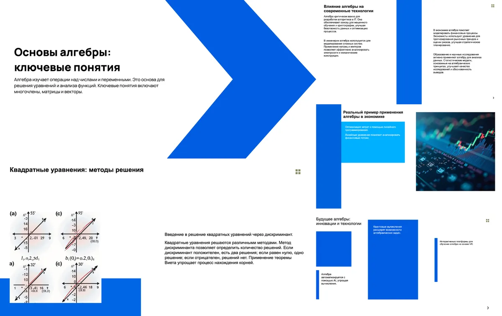
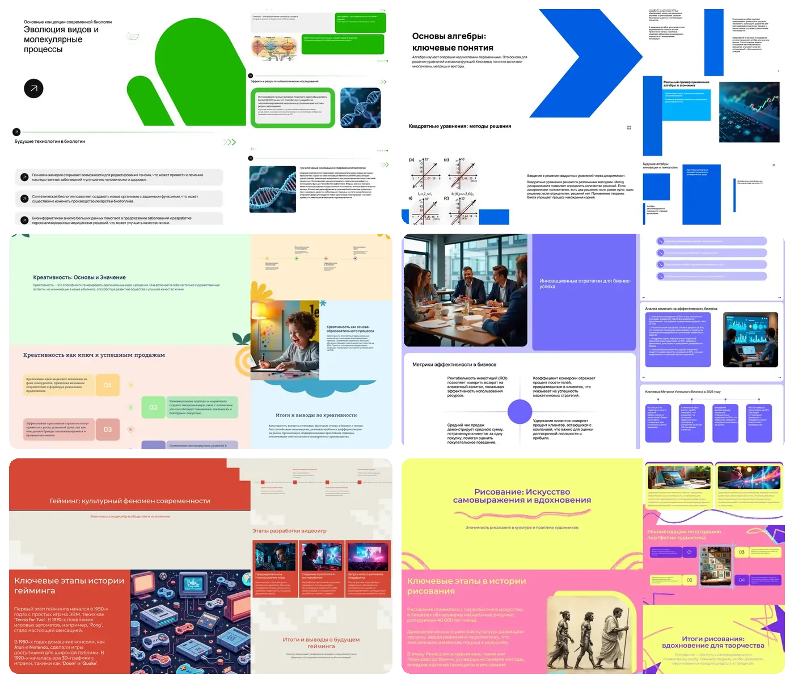
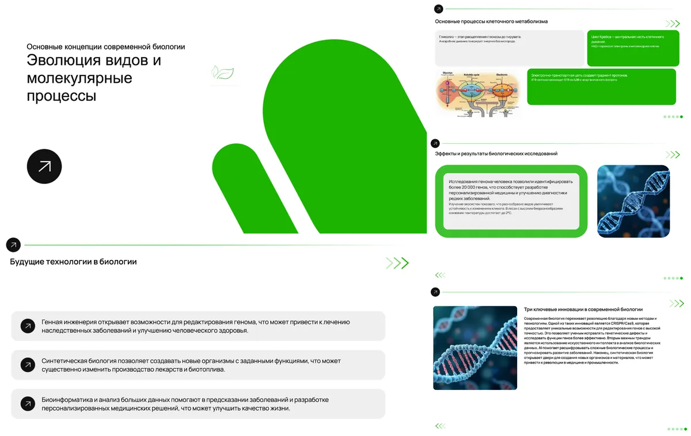
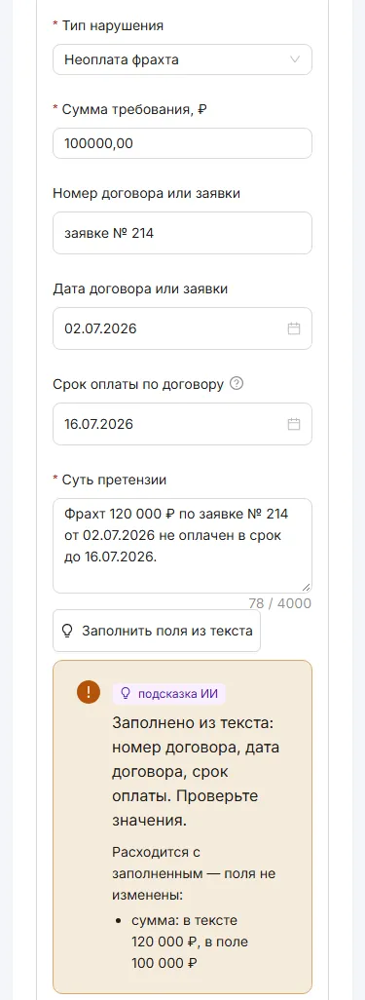
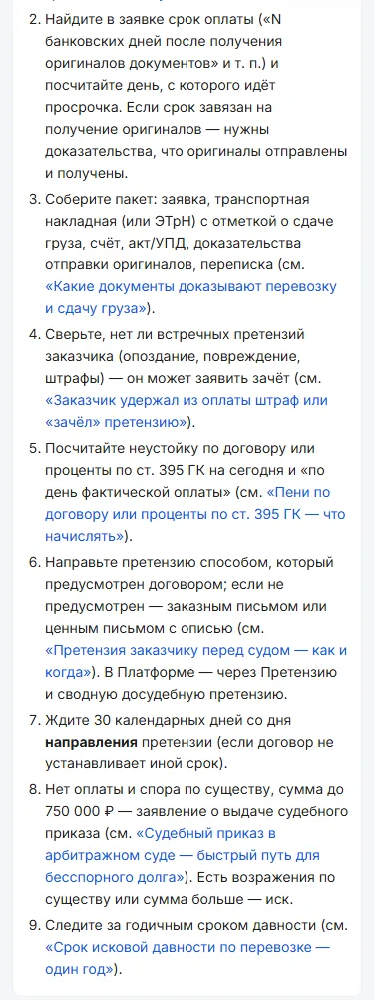
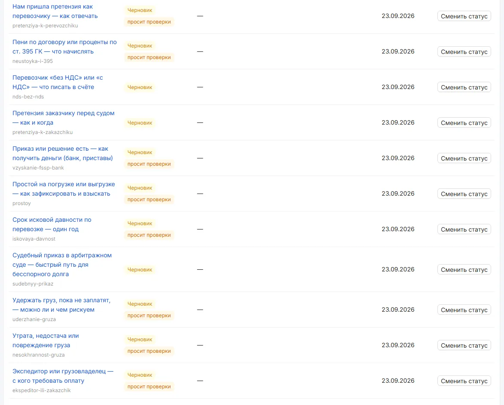

Ринат Тайсин
Внедряю ИИ в бизнес под ключ и обучаю сотрудников. Процесс прозрачный: на пальцах объясняю, что и как работает.
Архитектор систем: 10 лет в разработке, 7 из них — технический директор стартапа, который дорос до 15 000 заселений в месяц. Работаю удалённо из Казани.
Чем помогу
Привет, я Ринат. Помогу встроить ИИ в вашу работу так, чтобы он приносил прибыль каждый день: забирал рутину у людей и подсказывал свежие идеи.
С чем ко мне приходят:
- внедрение ИИ под ключ: от разбора процессов до работающей системы и её поддержки;
- лучшие практики: слежу за новыми моделями и инструментами и переношу полезное к вам, чтобы бизнес не стоял на месте;
- ИИ-агенты — программы, которые разбирают обращения, заводят задачи, пишут черновики документов и отвечают клиентам, пациентам, партнёрам;
- автоматизация рутины с помощью ИИ: связываю мессенджеры, календари, Jira, GitHub, Linear и Figma, чтобы данные ходили сами;
- обучение сотрудников: терпеливо показываю, как работать с новой системой;
- продукт от идеи до продакшена: первую версию B2B-платформы я выпустил за 7 недель;
- техническое руководство: собирал и вёл команды до 10 разработчиков.
Рутину забирает машина. Вам остаётся то, что ей не доверишь: решения про деньги и людей.
Начать проще всего с небольшой задачи — по ней будет видно, как я работаю. Пишите в Telegram или на почту, ссылки выше и в конце страницы. Ниже — мой опыт и кейсы со схемами и цифрами.
Резюме
- 10 лет пишу на TypeScript, Node.js и Python. 7 лет был техническим директором и сооснователем FLATSHARING, потом ведущим инженером в Linked Helper.
- С 2024 года строю системы на LLM для работающего бизнеса: агентов на Claude Code и MCP, LLM-функции в B2B SaaS, RAG, связки с Jira, GitHub, Figma, Linear и календарями.
- Рутину и проверки отдаю машине, человеку остаются опыт и решения.
AlemX — Product Owner мобильного приложения (контракт)
август 2026 — сейчас
AI-супер-апп в App Store и Google Play: мессенджер, лента, рекламный маркетплейс с оплатой за внимание, кошелёк со стейблкоинами. Работаю подрядчиком на частичной занятости, подчиняюсь CEO. Кейс ниже
- Построил систему из двух агентов на Claude Code: баг из рабочего чата становится тикетом в Jira, фиксом, AI-ревью, прогоном CI и мержем.
- За 2 месяца вышло 9 релизов в сторы и около 700 PR, до 50 в день. Срочный хотфикс доходит до сторов примерно за 3 часа.
Ещё 4 пункта
- Оператор разбирает находки тестировщиков из WhatsApp, заводит тикеты, раздаёт задачи агентам-разработчикам (до 4 параллельно) и ведёт PR до мержа. Штурман ведёт план релизов, выпуск в сторы и каждый вечер пишет руководству сводку за день.
- Код пишет Sonnet, ревьюит Opus с правом вето. Дальше локальный CI (tsc, eslint, тесты) и страж мержа с 8 проверками. Изменения интерфейса агент смотрит на эмуляторе ещё до тестировщиков.
- Внешние действия идут по allow-list в хуках, деньги, люди и договор — только по моему решению. С 29.09 агенты запускались больше 1000 раз, в 324 случаях из 348 я принял их рекомендацию.
- Первый за 4 месяца релиз в сторы вышел через 2 недели после моего прихода. Релизный конвейер на EAS собрал с нуля: iOS-сборка без Mac, отправка в App Store и Google Play через API. Демо для инвесторов прошло без сбоев.
Claude Code (постоянные сессии, субагенты, хуки, MCP, git worktree), Node.js, React Native, Expo, TypeScript, Firebase, EAS; Jira, GitHub, WhatsApp, Figma
РИСК — технический директор / ведущий разработчик
август 2026 — сейчас
Закрытая B2B-платформа vrisk.ru для перевозчиков и экспедиторов, которым не заплатили за рейс. Заказчик — ТЭК «Антарес», Казань. Частичная занятость. Кейс ниже
- По документам дела ИИ (Claude Sonnet и Haiku) пишет досудебную претензию и заявление в суд, подача идёт через «Мой Арбитр». Неустойку таблицей для судьи считает код, должника платформа обзванивает сама.
- Первая версия вышла за 7 недель, в бою на vrisk.ru с 21.09.2026, с тех пор 16 выпусков за 3 недели. Один разработчик с агентами Claude: ~980 коммитов, 187 ADR. Платформу обкатывают юрист и руководитель заказчика, сотрудники подключаются.
Ещё 3 пункта
- ИИ-адаптер прячет персональные данные: до вызова модели ФИО, телефоны, email и паспорт меняются на метки, после ответа возвращаются. Журнал вызовов хранится без текстов.
- Ответ модели принимается, только если каждая сумма, дата, номер и статья есть во входных данных. Иначе в документ идёт шаблон.
- ИИ-функции включаются флагами по мере проверки юристом, без модели продукт тоже работает. Черновик претензии готов примерно за 45 секунд. Помощник отвечает только по карточкам базы знаний (поиск на pgvector).
Node 22, TypeScript, Hono, Drizzle ORM, PostgreSQL + pgvector, Redis, S3; React, Vite, Ant Design; Docker Compose, GitHub Actions; Claude Sonnet и Haiku
Prezentashki.ru — технический директор (CTO) и сооснователь
май 2026 — сейчас
AI-сервис презентаций. Нас двое: партнёр ведёт маркетинг, на мне вся техника и продукт. Кейс ниже
- Запустил генерацию на LLM: GPT-4o пишет текст, Flux рисует картинки, на выходе PDF или PPTX. Сгенерировано около 16 000 слайдов.
- 2 600+ регистраций и 1 400+ онлайн-оплат, до оплаты дошли 38% (на 25.07.2026).
Ещё 4 пункта
- Сделал промпты, контроль качества вывода, цену слайда с учётом токенов и оплату через CloudPayments.
- Один веду инфраструктуру: blue-green деплой в Docker Compose, prod и preprod, ежедневные бэкапы с копией во внешнем S3. Сервис окупает свои расходы.
- Разработку, релизы и поддержку всего продукта веду один, вместе с агентами. Координирую подрядчиков по дизайну и маркетингу.
- Партнёру без технического опыта сделал Telegram-агента: он отвечает про рекламу в Яндекс Директе и меняет кампании только после его подтверждения.
Linked Helper — Lead Software Engineer
февраль 2025 — апрель 2026
B2B SaaS для автоматизации продаж в LinkedIn, 10 000+ пользователей в день.
- Сделал LLM-функции для переписки с клиентами: они пишут и правят сообщения с учётом диалога, этапа воронки в CRM, цели, языка и тона. Структурированный вывод, лимиты контекста; без провайдера продукт работает дальше.
- Перевёл разработку на AI-driven SDLC с Codex: агент собирал контекст из Jira, Figma и репозитория, помогал писать код, ревьюить и проверять UI, а результат проверял инженер.
Ещё 2 пункта
- Спроектировал модель RBAC и рабочих пространств: общие LinkedIn-аккаунты, управление несколькими аккаунтами, групповые лицензии.
- Проверку прав на тяжёлых многоуровневых SQL-джойнах заменил одной кешируемой проверкой.
TypeScript, Node.js, NestJS, PostgreSQL, Redis, RabbitMQ, Electron, Next.js и React, OpenAI API
Flomni — Senior Backend Engineer
сентябрь 2024 — февраль 2025
Омниканальная платформа диалогов: чат-боты, HR-автоматизация, передача диалога оператору.
- Встраивал LLM-функции в основной продукт. Переписал легаси — продукт стал стабильнее и быстрее. Сложные бэкенд-функции делал с нуля, требования согласовывал прямо с B2B-клиентами.
Node.js, TypeScript, MongoDB, Redis
FLATSHARING — CTO и сооснователь
октябрь 2017 — сентябрь 2024
Бесконтактное заселение в краткосрочную аренду с умными замками.
- Построил бо́льшую часть системы: бэкенд, бизнес-логику, связку с умными замками. Бэкенд выдержал ~15 000 заселений в месяц и 4 000 пользователей в день.
- Собирал и вёл команды до 10 разработчиков: найм, онбординг, поставка.
Ещё 3 пункта
- Перенёс основную базу с Firestore на MongoDB под тяжёлые поисковые запросы, расходы на транзакции заметно упали.
- В спад рынка перестроил IT-отдел и срезал расходы на инфраструктуру.
- С апреля по декабрь 2023 на частичной занятости был тимлидом в «Самолет Плюс»: вёл команду фронтенда, бэкенда и мобильной разработки продукта «Самолет+ Аренда».
Node.js, TypeScript, MongoDB, Firestore, Flutter, GCP
Ранний опыт
2016–2020
- НТЦ «Оптимо»: сметные расчёты для нефтегаза на C++, парсеры государственных PDF.
- МКУ ЦИТ: мобильное приложение «Ревизор Уфа» на Flutter, Nuxt.js, MongoDB, C# и MS SQL.
- МК «Развитие»: бэкенд на Express.js для заказа еды.
Навыки
- AI и LLM
- Claude Code, MCP, Anthropic и OpenAI API, AI-агенты, RAG, pgvector, prompt engineering, оценка качества ответов, расход токенов
- Языки
- TypeScript, JavaScript, Python (рабочий уровень), SQL; C++ в начале карьеры
- Бэкенд
- Node.js, NestJS, Express, Hono, PostgreSQL, MongoDB, Redis, RabbitMQ, REST, вебхуки
- Фронтенд и мобильное
- React, Next.js, React Native и Expo, Electron, Flutter
- Инфраструктура
- Docker, CI/CD, GitHub Actions, EAS, Cloudflare Workers, GCP, AWS, Firebase, Playwright
- Инженерия
- Отладка, рефакторинг, производительность, системный дизайн, RBAC и multi-tenant SaaS, код-ревью, релизы
Образование и языки
УГНТУ, бакалавр по программной инженерии, 2011–2015. Призёр региональных олимпиад по математике, физике и информатике, выступал на студенческих соревнованиях по программированию в Киеве и Саранске.
Русский — родной. Английский — B1–B2: свободно читаю и пишу на технические темы.
Свои проекты
- Личный AI-хаб, 2026
- Система агентов на Claude Code, которая ведёт мои проекты. Кейс ниже
- TG Power, 2026
- Обучающие программы внутри Telegram: TypeScript на Cloudflare, вебхуки, расписание уроков, кабинет автора.
- Нейро Анатолий
- AI-ассистент в Telegram на Cloudflare Workers AI: RAG по каталогу товаров, ограничения, проверка ответа и перегенерация.
Кейсы
- агент на модели
- код без модели
- решение человека: деньги, люди, сроки
Агенты ведут баги от чата до мержа
AlemX, Product Owner мобильного приложения по контракту, с августа 2026
- Задача
- Баги сыплются в WhatsApp, релиза в сторы нет 4 месяца, выпуск держится на одном человеке.
- Сделал
- Два постоянных агента на Claude Code. Оператор доводит баг из чата до мержа через тикет, AI-ревью и CI. Штурман ведёт релизы и вечернюю сводку. Деньги, люди и сроки решаю я.
- Результат
- За 2 месяца — 9 релизов и около 700 PR, хотфикс в сторах через 3 часа.
- 9 релизовв сторы за 2 месяца
- ~700 PRсмержено, до 50 в день
- 324 из 348рекомендаций агентов я принял
- 3 часаот хотфикса до сторов
Как устроено и что агенту нельзя
С чего начинал
- Команда небольшая, релиза в сторы не было около 4 месяцев.
- Баги писали в WhatsApp-группу тестировщики, руководство и маркетинг. Часть касалась старой сборки, и их расследовали зря.
- Выпуск держался на одном человеке. Прогресс команда меряет закрытыми багами и PR.
- Я на частичной занятости и не успеваю быть ещё диспетчером и ревьюером. Диспетчерскую работу забрали агенты, решения остались за людьми.
Что агенту нельзя
- Деньги, люди, договор и сообщения руководству — только после моего «ок».
- Вопрос мне приходит одним сообщением: варианты, рекомендация, срок и что будет по умолчанию. Сам агент делает только обратимое.
- Без роли хук запрещает любую внешнюю команду. В WhatsApp агент пишет через обёртку, пушит одним скриптом со сверкой на ключи, чужой код запускает только в контейнере.
- Команда «стоп» срабатывает в обход агента.
Из чего состоит
- Оператор. Разбирает находки тестировщиков из WhatsApp, отсеивает дубли и баги старых сборок, заводит тикеты, раздаёт задачи и ведёт PR до мержа. Тестировщикам говорит, что перепроверить.
- Штурман. План релизов, выпуск в сторы, вечерняя сводка руководству.
- Агенты-разработчики. До 4 параллельно, каждый в своём git worktree. Sonnet пишет, Opus ревьюит с правом вето, раундов ревью не больше двух.
- Страж мержа. 8 проверок: тесты, ревью, доверие к ветке. Мерж в обход закрыт хуками.
- Эмулятор. Изменения интерфейса агент смотрит сам, до тестировщиков.
- Сторож. Раз в 5 минут проверяет агентов и мост WhatsApp, упавших поднимает без модели.
- Релизы. EAS с нуля: iOS без Mac, отправка в App Store и Google Play через API, поезд dev → rc → main.
Ещё факты
- С 29.09 агенты запускались больше 1000 раз.
- Первый за 4 месяца релиз вышел через 2 недели после моего прихода.
- Демо для инвесторов (регистрация, лента, пост, платный чат, кошелёк) прошло без сбоев.
Данные на 09.10.2026.
Стек
- Агенты
- Claude Code: постоянные сессии, хуки, MCP, субагенты, git worktree; Sonnet и Opus
- Код
- Node.js-скрипты, PowerShell, Docker для изоляции
- Интеграции
- Jira, GitHub, мост WhatsApp (MCP), Figma
- Релизы
- EAS, App Store Connect API, Google Play API
- Приложение
- React Native, Expo, TypeScript, Firebase
Отдел из агентов ведёт мои проекты
Свой проект, с июля 2026 в ежедневной работе
- Задача
- Несколько проектов сразу. Сообщения идут в мессенджеры и голосом, задачи разбросаны по трекерам, застрявшие дела приходится держать в голове.
- Сделал
- Оператор слушает мессенджер, у каждого проекта свой постоянный агент, задачи из трекера делают фоновые исполнители. Код ищет застрявшее и считает, чем заняться сейчас.
- Результат
- 5 постоянных агентов и 10 фоновых задач. Дежурят скрипты, токены на это не тратятся.
- 5 + 10постоянных агентов и фоновых задач
- $0 за токенына оператора, сторожа, обход застоя и ночные задания
- 182 коммитас 25.07.2026
- ≈ 11 200 строкNode.js, 23 тестовых файла
Из чего состоит, как выглядит переписка, стек
С чего начинал
- Веду мобильное приложение по контракту, B2B-платформу партнёра и свой AI-сервис.
- Узкое место — тот, кто помнит, что важнее. В любом отделе с потоком обращений это руководитель, здесь — я.
- Агентам отдал слежку за трекерами и мессенджерами, разбор входящих и голосовых, выбор следующего дела, возврат застрявшего, контроль аварий, бэкапы и уборку дисков.
- Что здесь работает, переношу в автоматизацию бизнеса.
Правила системы
- Что можно посчитать без LLM, считает скрипт. Модель берётся самая лёгкая из подходящих.
- Первой система пишет только в пяти случаях: ответ, авария, вопрос с вариантом по умолчанию, сводка фактов дважды в день, недельная сверка.
- У каждого открытого дела есть агент-владелец, и двигает его он, а не я.
- Значений ключей агенты не видят. Права каждого — белый список в его конфиге.
- Новое правило сразу уходит в код, тест, хук или инструкцию, устаревшее удаляется.
Из чего состоит
- Оператор, код без модели. Слушает мессенджер Max, расшифровывает голос, каждые 15 секунд разводит письма агентов. В 09:00 присылает одну пачку вопросов с рекомендацией и вариантом по умолчанию.
- Штурман хаба. Постоянная сессия Claude Code: отвечает мне, крупное отдаёт фоновым исполнителям.
- Штурманы столов. По постоянной сессии на проект, общаются письмами через хаб. В 04:00 перезапускаются в новый чат и забирают только открытые дела.
- Лэйны. Сессия Claude на одну задачу Linear, каждая в своём git worktree, до трёх параллельно.
- Разбор входящих. Надиктованное, голосовые и Linear Inbox разносит по трекерам, не спрашивая меня.
- Поток внимания. Один список по всем проектам: сначала дела до 30 минут, потом со сроком в ближайшие 48 часов, потом с последствиями. Если один проект горит, а я сижу в другом, приходит короткий пинг, не чаще двух раз в будний день.
- Обход застоя. Каждые 30 минут; проверяет, сдвинулось ли само дело, а не отметка. Раз в неделю 8 субагентов разбирают неделю, план правок я утверждаю.
- Сторож. Каждые 10 минут смотрит процессы, входы в сервисы, Docker и диски. Об одной поломке пишет раз в сутки.
- Ночные задания. Копия документов в облако, фото с телефона, уборка в Корзину, осмотр автозапуска. Всё кодом.
- Инструменты. 13 общих, отдельный кейс.
Ещё цифры
- ≈ 11 200 строк Node.js: 28 скриптов, 28 модулей, 23 тестовых файла.
- Общие инструменты: 13 штук, ≈ 20 000 строк, 73 коммита с 29.09.2026.
Данные на 09.10.2026.
Стек
- Агенты
- Claude Code: постоянные сессии, субагенты, git worktree, скиллы, хуки, MCP
- Код
- Node.js (ESM), PowerShell, Python, C#/.NET; Windows Terminal и Планировщик Windows
- Трекеры
- Linear, Jira, Google Calendar, Apple Reminders (iCloud)
- Связь и голос
- Max, WhatsApp, Telegram; Groq для распознавания речи
- Ключи и данные
- своё хранилище на DPAPI и AES-GCM, мастер-копия в Bitwarden; Яндекс.Диск REST; Figma
Презенташки: тема на входе, презентация на выходе
prezentashki.ru, технический директор (CTO) и сооснователь, с мая 2026
- Задача
- Школьнику или учителю нужна презентация быстро и недорого. Заказ не должен ждать ничьих рук, а партнёру нужны цифры по рекламе без разработчика.
- Сделал
- После оплаты сервер сам пишет текст (GPT-4o), рисует картинки (Flux), собирает слайды и отдаёт PDF или PPTX. Партнёру сделал Telegram-ассистента по рекламе.
- Результат
- 2 600+ регистраций, до оплаты дошли 38%. С июля по 07.09.2026 ни одной ошибки генерации.
- 2 600+регистраций на 25.07.2026
- 38%регистраций дошли до оплаты
- 88 смедиана генерации, p90 — 149 с
- 0 ошибокгенерации с июля по 07.09.2026

Как устроен пайплайн и ассистент для партнёра
С чего начинал
- Путь клиента: тема, число слайдов, шаблон, оплата, готовая презентация, правка в редакторе, PDF или PPTX.
- Нас двое: партнёр ведёт маркетинг, на мне техника и продукт. Клиенты приходят через платную рекламу.
Ассистент для партнёра
- Стоимость покупателя, долю расходов на рекламу и прибыль считают скрипты по Яндекс Директу и Метрике. Модель только собирает ответ и объясняет.
- Любую правку в рекламном кабинете и любой выкат ассистент присылает заявкой с кнопками ✅/❌. Без нажатия ничего не меняется.
- Спрашивать можно голосом.
Что построено
- Заказ. Форма «тема + слайды + шаблон», оплата картой, через СБП или подпиской.
- Статусы. awaiting_payment → paid → generating → ready или failed. Генерацию запускает сервер, фронтенд только спрашивает статус.
- Надёжность. Один заказ — одна генерация, даже если запрос пришёл дважды. Каждые ~30 секунд cron поднимает зависшие заказы.
- Генерация. План по теме, текст и структура от GPT-4o и 4o-mini, HTML-шаблон, около 6 картинок Flux, экспорт. Тема берётся из запроса дословно.
- Редактор. Правка в браузере, PDF через Puppeteer, PPTX через pptxgenjs.
- Шаблоны. Каталог HTML-шаблонов и свой перенос шаблонов из Figma.
- Текст выступления. Платная функция: GPT-4o пишет речь к слайдам.
- Инфраструктура. Blue-green в Docker Compose за nginx, prod и preprod, релиз по тегу через GitHub Actions, ежедневные бэкапы с копией в S3. Код пишу с Claude Code и Codex.
Ещё цифры
- 1 400+ онлайн-оплат и ~16 000 слайдов на 25.07.2026.
- Ни одного заказа без презентации с июля по 07.09.2026.
- 11,3% покупателей купили повторно, к 07.09.2026.
- 945 коммитов с 02.05.2026, вся техника — один человек с агентами.
- Сервис окупает свои расходы.
Регистрации, оплаты и слайды — срез базы на 25.07.2026. Скорость — за август 2026, ошибки — по 07.09.2026.
Стек
- Модели
- OpenAI GPT-4o и 4o-mini — текст; Flux — картинки
- Бэкенд
- Node 22, TypeScript, Express → Hono, Sequelize, PostgreSQL, Zod, OpenAPI
- Фронтенд
- React 19, Vite, TanStack Query
- Экспорт
- Puppeteer (PDF), pptxgenjs (PPTX), HTML-шаблоны из Figma
- Оплата
- CloudPayments: карта, СБП, подписки
- Инфраструктура
- Docker Compose, nginx, blue-green, GitHub Actions, GHCR, бэкапы в S3
- Ассистент
- Telegram Bot API, API Яндекс Директа и Метрики


РИСК: долг за рейс без юриста в штате
vrisk.ru, технический директор / ведущий разработчик, с августа 2026
- Задача
- Заказчик не платит перевозчику за рейс, а юриста в небольшой транспортной компании нет. Деньги теряются на сроках и ошибках в бумагах.
- Сделал
- Платформу от претензии до суда для ТЭК «Антарес» (Казань). ИИ пишет претензию и заявление в суд по документам дела, неустойку и сроки считает код, должника платформа обзванивает сама.
- Результат
- В бою с 21.09.2026, через 7 недель после старта. За 3 недели 16 выпусков. Её обкатывают юрист и руководитель заказчика, сотрудники подключаются.
- 7 недельот старта 02.08 до боя 21.09.2026
- 16 выпусковv1.0.0 → v1.0.15 за 3 недели
- ≈ 45 сна черновик претензии
- ~980 коммитови 187 ADR, один разработчик с агентами Claude
Как ИИ встроен в юридический процесс
С чего начинал
- Перевозчик не знает, какую претензию писать, сколько ждать, когда идти в суд и как посчитать неустойку.
- Платформа ведёт его от претензии через досудебное урегулирование к судебному приказу или иску и сама собирает документы.
- Ошибка в сумме или дате стоит денег. Поэтому модель не должна выдумывать цифры, видеть лишние персональные данные и ломать продукт своим сбоем.
Где сейчас
- Старт 02.08.2026, в бою на vrisk.ru с 21.09.2026 — через 7 недель.
- Заказчик — ТЭК «Антарес», Казань. Пилот ведут юрист компании и её руководитель, сотрудники подключаются.
- 16 выпусков (v1.0.0 → v1.0.15) за 3 недели, ~980 коммитов, 187 ADR. Разработчик один, с ИИ-агентами Claude.
Данные на 11.10.2026. Цифр использования не публикую. ИИ-функции включаются флагами по мере проверки юристом.
Что построено
Сначала платформа без ИИ: всё, что влияет на деньги и сроки, считает код. Потом ИИ поверх неё, с тремя предохранителями.
- Кабинет перевозчика. Мастер претензии: несколько требований в одном черновике, вложения, статусы, публикация в реестр.
- Реестр контрагентов. Карточка по ИНН со статистикой претензий и наблюдением.
- Документы. ИИ пишет досудебную претензию и заявление в суд по документам дела. PDF и почтовый пакет собирает шаблон, неустойку считает код и выдаёт таблицей для судьи.
- Суд. Судебный приказ или иск подаются через «Мой Арбитр».
- Вручение. Досудебку можно отправить через ЭДО (Диадок, СБИС, Астрал). Журнал вручения выгружается в PDF.
- Обзвон. Должника платформа обзванивает автоматически.
- Маска данных. До вызова модели ФИО, телефоны, email и паспорт меняются на метки вида [ФИО-1], после ответа возвращаются. Журнал вызовов без текстов.
- Сторож чисел. Ответ принимается, только если каждая сумма, дата, номер и статья есть во входных данных. Иначе в документ идёт шаблон.
- Флаги. Каждая ИИ-функция включается отдельно. Если модель недоступна, продукт работает без неё.
- Модерация и помощник. Модератору ИИ готовит чек-лист с доказательствами, решает модератор. Помощник отвечает только по карточкам «Спорные ситуации» (поиск на pgvector) и данным дела.
- Остальное. Сверка оплат с банком, SMS-коды, чат поддержки, тарифы, админка.



Стек
- ИИ
- Claude Sonnet и Haiku через свой адаптер: маска персональных данных, сторож чисел, флаги; pgvector
- Бэкенд
- Node 22, TypeScript, Hono, Drizzle ORM; PostgreSQL, Redis, S3
- Фронтенд
- React, Vite, Ant Design
- Инфраструктура
- Docker Compose; GitHub Actions: стенд по main, бой по тегу; GlitchTip
Один набор инструментов на всех агентов
Свой проект, с сентября 2026
- Задача
- Нескольким системам агентов нужны одни и те же чаты, задачи, макеты и ключи. Если у каждого проекта своя копия, не понять, какой агент что видит.
- Сделал
- Каждый инструмент написан один раз, а права агента записаны в его конфиге и проверяются самим инструментом. В наборе диктовка в любое окно, хранилище ключей, которые агент использует, но не видит, и один вход в мессенджеры.
- Результат
- 13 инструментов на 5 постоянных агентов. Новый проект подключается строкой в настройках.
- 13инструментов в общем наборе
- 5постоянных агентов на одном коде
- ≈ 20 000строк: Node.js, PowerShell, Python
- 73коммита с 29.09.2026
Что внутри: диктовка, ключи, мессенджеры, трекеры, Figma
С чего начинал
- Агенты работают на мобильное приложение, проекты партнёров и мой хаб. Всем нужны чаты, задачи, дизайн и ключи API.
- Без общего набора у каждого проекта свой клиент трекера, свой мост к мессенджеру и своё место для ключей. Ошибку приходится чинить в каждой копии.
Главное правило
Инструменты не знают, кто ими пользуется: в коде нет ни названий проектов, ни списков чатов. Агент приходит со своим конфигом, где перечислено, какие чаты ему читать и куда писать, какие проекты, макеты, профиль браузера и хранилище ключей. Права проверяет сам инструмент, поэтому их не обойти ни из командной строки, ни через MCP.
Что внутри
- GroqDictate. Нажимаю горячую клавишу и говорю. Groq распознаёт речь, лёгкая модель убирает оговорки, словарь поправляет имена, и текст встаёт туда, где курсор. Один .exe на .NET, ~1,8 МБ, без установщика.
- Ключница. Ключи лежат зашифрованными, по хранилищу на проект, боевые отдельно. Мастер-копия в Bitwarden. Показать значение агент не может: он запускает программу через Ключницу, и ключ попадает только в её окружение.
- Связь. Max, WhatsApp и Telegram через один MCP-сервер с локальным архивом. Агент видит только чаты из своего белого списка и пишет только туда, куда разрешено.
- Трекеры. Linear и Jira: одна библиотека, CLI и MCP. Фильтр уходит прямо в запрос, ответ проверяется ещё раз. Лимит запросов на ключ инструмент делит между агентами.
- Figma. Раз в сутки инструмент снимает макеты на диск, и днём агенты читают их без лимитов. Каждый видит только свои файлы.
- Остальное. Свой профиль Chrome у каждого агента, пул аккаунтов для мобильных сборок, запуск постоянных сессий.
Ещё цифры
- 10 тестовых файлов.
- GroqDictate целиком — один .exe на ~1,8 МБ.
- Ключи всех проектов лежат в одном зашифрованном месте, права агента — в одном конфиге.
Данные на 09.10.2026.
Стек
- Агенты
- Claude Code: MCP-серверы, хуки, постоянные сессии
- Код
- Node.js (ESM), PowerShell, Python, C#/.NET (GroqDictate)
- Интеграции
- Max, WhatsApp, Telegram, Linear, Jira, Figma, Chrome, EAS, Groq
- Ключи
- DPAPI + AES-GCM, мастер-копия в Bitwarden
Контакты
Ищу проект или частичную занятость, удалённо, от 15 часов в неделю. Полную ставку тоже рассмотрю.